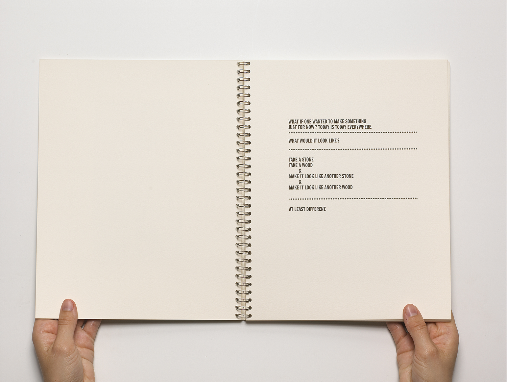
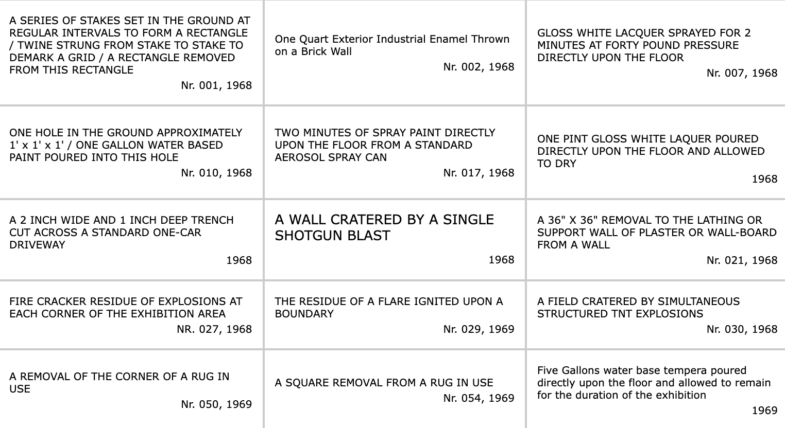
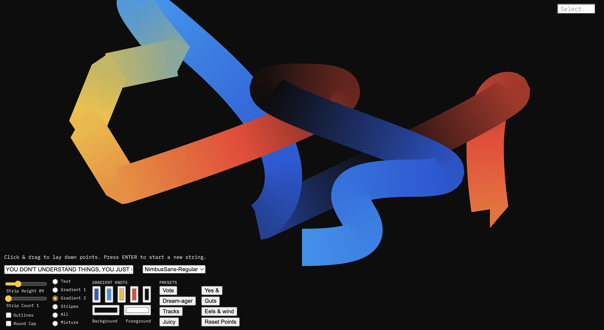
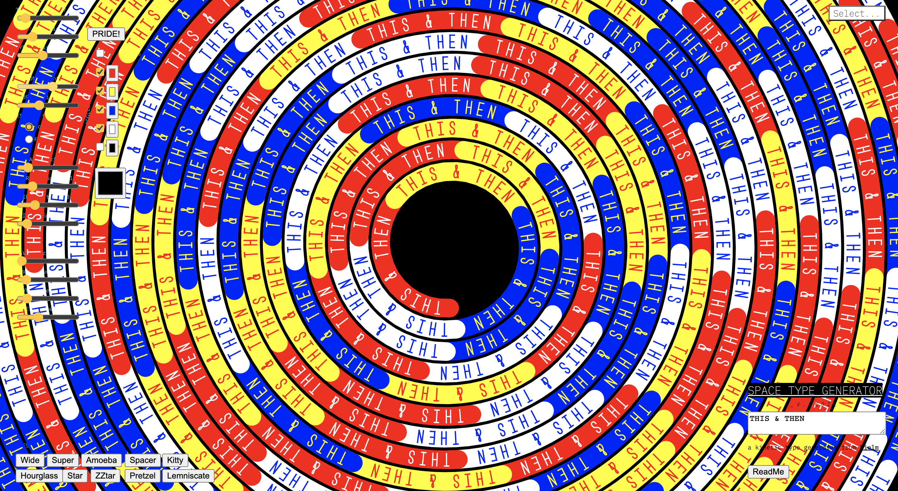

this-is-a-collaborative-output
Statements, 1968
Lawrence Weiner's first artist book with seemingly neutral statements that otherwise ring of instruction, or an invitation to actualize and materialize the projected work.
see the instructions
Weiner demonstrated that for his art pieces to be created, the lettering did not necessarily need to be done by himself. As long as the painter adhered to the instructions dictated by Weiner, his pieces would come into existence. The development of Weiner’s artistic style focused on the possibility for language to exist as an art form by itself, with the addition of materials considered less important.
I find this interesting because design is a largely synergic medium, and by using language combined with materiality and visualisation, the artist and the participant are able to create something more meanigful and unique.
source
Space Type Generator
Try it out
I also really like 'Space Type Generator' by Kiel Mutschelknaus. As a toolkit, he is allowing the audience to provide their own set of parameters or instructions to create a collaborative visual output.


The synergy of instruction-based art.